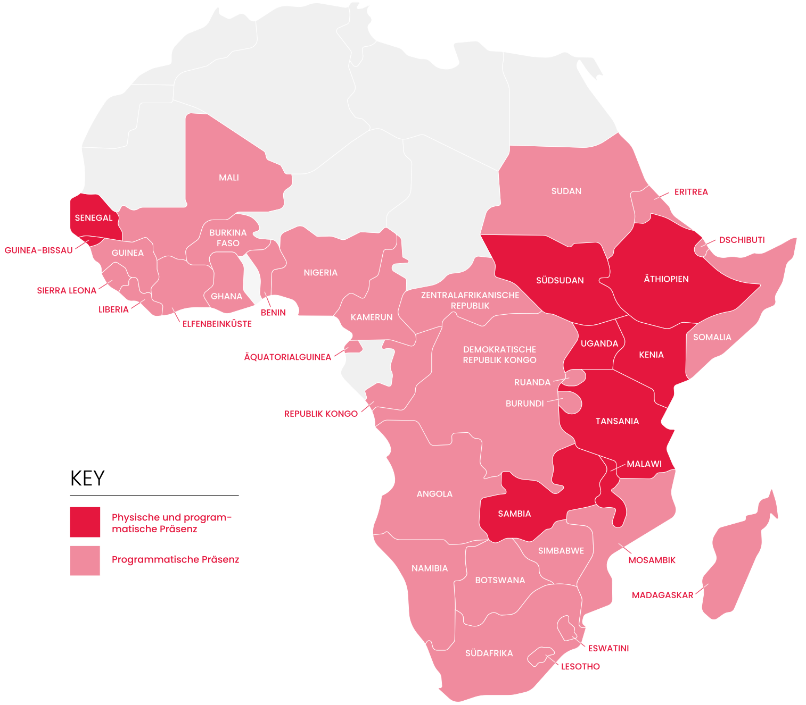

Medizin aus der Luft
Wenn Wege durch Fluten oder Konflikte abgeschnitten sind, nutzen wir Drohnen für den Transport von Medikamenten und Laborproben.

Werden Sie Teil der Ground Crew. Ein Briefing in 11 Kapiteln.
Gründung der Amref Flying Doctors. Wir haben die Flugrettung in Afrika quasi erfunden. Heute sind wir die größte afrikanische Gesundheitsorganisation — von Afrikaner:innen, für Afrikaner:innen.
Die internationale Hilfe wurde massiv gekürzt. Schätzungen sagen: ein Rückschritt um 14 Jahre — in einem Jahr. In weiten Teilen gibt es keinen Strom. Kein Wasser. Und vor allem: keine Hilfe.
Ein Arzt. Für fünfzigtausend Menschen. Das ist die Realität in weiten Teilen des Landes.
Wenn Amref geht, werden die Kinder sterben.
vermeidbare Todesfälle weltweit bis 2030 — durch Kürzungen der Entwicklungshilfe. Davon 2,5 Millionen Kinder unter fünf Jahren. Das ist die Lancet-Prognose.
Wir warten nicht, bis die Menschen zu uns kommen. Unsere Teams gehen zu Fuß oder mit dem Motorrad — direkt in die Dörfer.
Mobile Teams und Notfallstationen fangen dort auf, wo staatliche Strukturen enden.
Basisversorgung, Medikamente und Notfallnahrung — dort, wo Wege abgeschnitten sind.
Wir sind seit Jahrzehnten da. Und wir bleiben, wenn andere gehen.
Wenn Wege durch Fluten oder Konflikte abgeschnitten sind, nutzen wir Drohnen für den Transport von Medikamenten und Laborproben.
Keine einfachen Brunnen — Solar-Logistiksysteme, die auch bei extremen Wetterbedingungen funktionieren.
Wir fliegen Wissen rein, statt Patienten raus. Hebammen werden digital geschult und vernetzt — nachhaltig und skalierbar.
Wir sind dort, wo die Hilfe am dringendsten gebraucht wird — und wir bleiben, wenn andere gehen. 2026 liegt unser Fokus auf dem Südsudan.

Über 85 % Ihrer Spende fließen direkt in Gesundheits- und Ausbildungsprojekte. Nicht in Overhead. Sondern in Medikamente, Hebammen und mobile Kliniken.
Amref Health Africa Deutschland trägt das DZI Spendensiegel — das Gütesiegel für seriöse Spendenorganisationen in Deutschland.
● DZI · SPENDEN-SIEGELEntscheidungen fallen dort, wo die Hilfe gebraucht wird. Nicht in Europa.
Mit Ihrer monatlichen Unterstützung sichern Sie Medikamente, Notfallnahrung und die Ausbildung von Hebammen im Südsudan — Monat für Monat, Leben für Leben.
Sie sind jetzt Teil der Mission. Monat für Monat bewegen wir gemeinsam, was einzelne Organisationen nicht mehr bewegen. Vielen Dank.